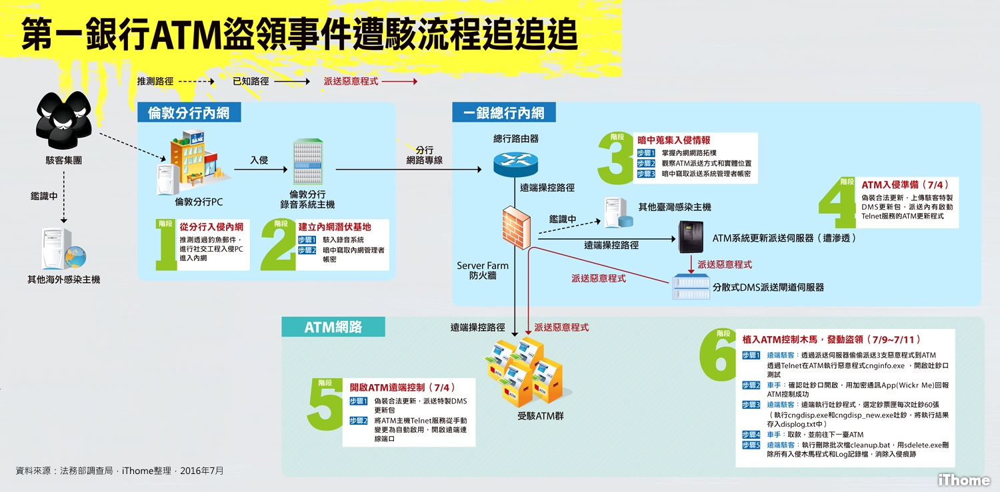
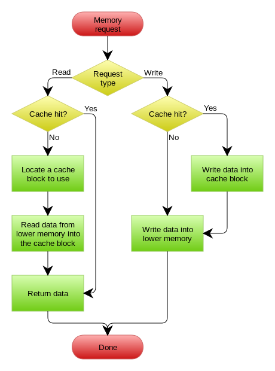
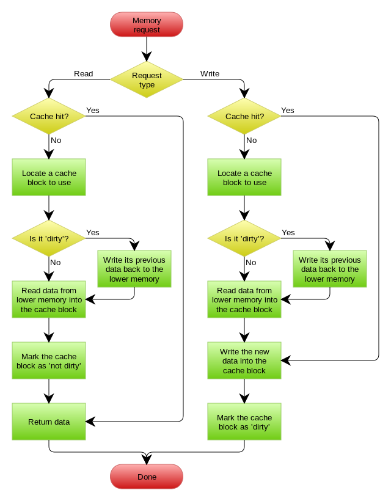

MoClippings #9 別用傳統生產的模式管理腦力密集的團隊
發刊日 : 2016/07/23 - 2016/07/31
行銷推廣
- 優化宅的日常-數據分析篇 - 關於數據分析在做什麼，可以做到什麼？很棒的一篇入門簡報
專案管理
- GitLab kanban board 把 GitLab 的 Issue Tracking 變成可以支援看板方法
The Process · The Lean Validation Playbook - 精實『驗證』程序手冊
因為最怕的是花時間做出沒人要的東西，因此，Hanno (一個顧問公司）發表了一套驗證的方法，希望避免類似的錯誤。
方法分成4個階段：- 驗證問題是否值得解決
- 驗證市場是否存在（需要解決這個問題的人是否夠多）
- 驗證產品是否真的解決問題
- 驗證付費的意願
資訊知事
- Use Git to Control Your Life // Speaker Deck - 高見龍 - 「五倍紅寶石 Git 課程「人生不能重來，但 Git 可以」投影片
【詳細圖解】駭客入侵一銀ATM流程追追追 | iThome - 遙控臺北、臺中22家第一銀行分行內41臺ATM的操作指令，竟來自遠在1萬公里外的英國，一臺第一銀行倫敦分行內鎖在鐵櫃中的電話錄音伺服器主機，成了駭客遠端遙控ATM大吐鈔的跳板。根據調查局目前揭露的資料，可以將駭客入侵一銀ATM的流程，分成6個階段
- 
FallibleInc/security-guide-for-developers: Security Guide for Developers - 給工程師的網站安全指南 - 可以把內容當做試 check-list 做檢驗查看。
「拿代码量算KPI……跟程序员们来这套？」全集 - 當開始拿寫的程式碼行數去計算開發者的績效時，會發生什麼事情？一起來看看這上下兩集的漫畫吧！
工具軟體
網站開發
系統架構
- Docker for Mac and Windows is Now Generally Available and Ready for Production | Docker Blog
- 可以正式在 Mac and Windows 上面使用 Docker 了！！！
- The 11 Rules of GitLab Flow | GitLab
- 原文規則：
- Use feature branches, no direct commits on master.
- Test all commits, not only ones on master.
- Run all the tests on all commits (if your tests run longer than 5 minutes have them run in parallel).
- Perform code reviews before merges into master, not afterwards.
- Deployments are automatic, based on branches or tags.
- Tags are set by the user, not by CI.
- Releases are based on tags.
- Pushed commits are never rebased.
- Everyone starts from master, and targets master.
- Fix bugs in master first and release branches second.
- Commit messages reflect intent.
- 中文翻譯：
- 使用 feature branches，不要直接存取主幹 master
- 對所有的 commit 進行測試，而不是只測試 master 上面的
- 對所有的 commit 進行所有的測試。如果你的測試要跑超過五分鐘，請開始進行平行化測試。
- 在 merge 到 master 前就進行 code review 而不是之後。
- 讓佈署程式自動化，並且以分支或 tag 為基礎做佈署。
- Tag 應該由人工設定，不要由 CI 做。
- 發佈版本應該由 tag 進行。
- 不要對已經 push 的 commit 再進行 rebase 。
- 由 master 開始，由 master 結束。
- 修改 bug 先在 master 分支進行，其次才是 release 的分支。
- 撰寫 commit message 時，必須寫清楚目的與意圖。
- 什麼是 GITLAB Flow：GitLab Documentation
- 原文規則：
- RedSign77/dp2: Design patterns II. - PHP Design Patterns Examples. - 以 PHP 所撰寫的 Design Pattern 範例。
- Facade pattern
- Strategy pattern
- Command pattern
- Proxy pattern
- RethinkDB: the open-source database for the realtime web - 即時資料庫
-
- 更新缓存的的Design Pattern有四种：Cache aside, Read through, Write through, Write behind caching
- Cache Aside Pattern
- 失效：应用程序先从cache取数据，没有得到，则从数据库中取数据，成功后，放到缓存中。
- 命中：应用程序从cache中取数据，取到后返回。
- 更新：先把数据存到数据库中，成功后，再让缓存失效
Read/Write Through Pattern
- 
Write Behind Caching Pattern
- 
- 在更新数据的时候，只更新缓存，不更新数据库，而我们的缓存会异步地批量更新数据库。这个设计的好处就是让数据的I/O操作飞快无比（因为直接操作内存嘛 ），因为异步，write backg还可以合并对同一个数据的多次操作，所以性能的提高是相当可观的。
前端
- GUI应用程序架构的十年变迁:MVC,MVP,MVVM,Unidirectional,Clean - 某熊的全栈之路 - SegmentFault - 圖型化介面這十年來的變遷。
- 自學網頁の嬰兒教材：HTML與CSS | 轉個彎教室 - 一些關於 HTML、CSS 的基本教學教材。
行動開發
AndroidInterview-Q-A/README-CN.md at master · JackyAndroid/AndroidInterview-Q-A - 中國百度、小米、新浪等等公司 Android 面試題庫，這篇記錄了六七十個面試時碰到的問題。
想像力不是使用者的超能力—Prototyping 淺入淺出（Wesley） - 這份簡報介紹了為什麼需要 Prototype ，跟如何開始做 Prototype 值得看。